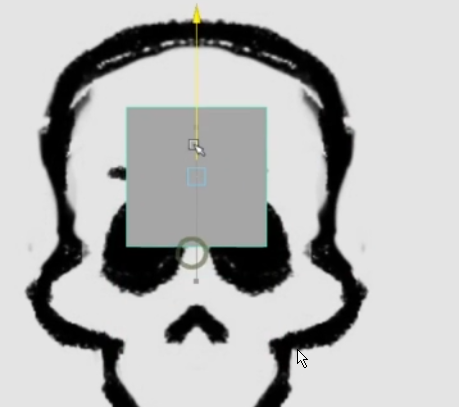

Box Modelling
(Box is used)
------------------>>>>>>
Edge Modelling
(Plane is used)
------------------->>>>>>>
Make a object to follow symmetric deformation about an axis

 ------------------->>>>>>>
------------------->>>>>>>